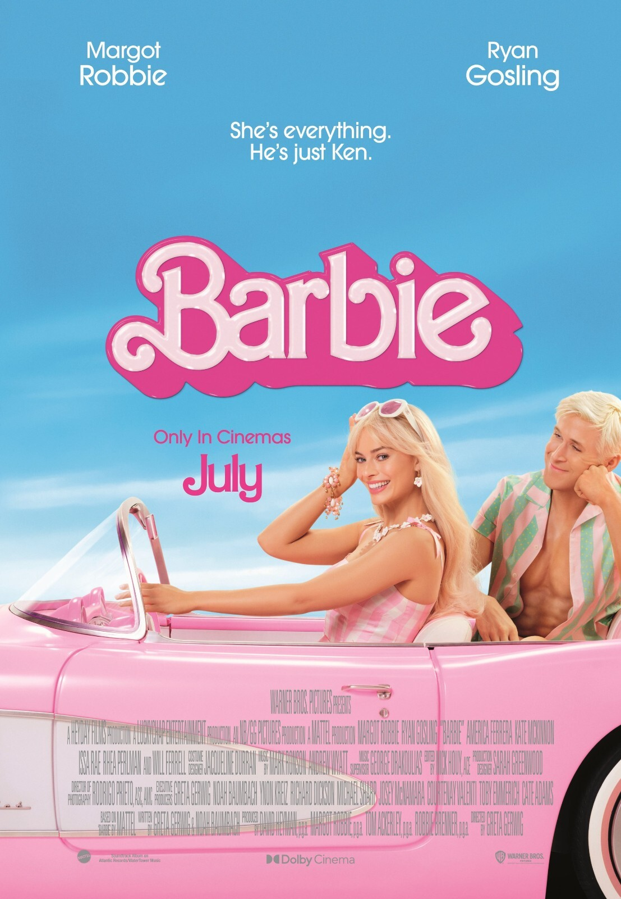
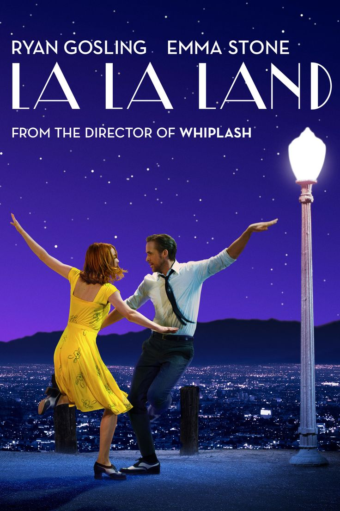
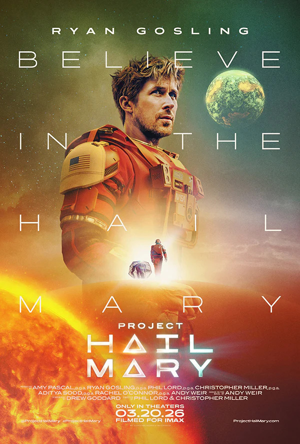

Hi, my name is Prudence Stanley and today I am going to be explaining some of the many Ryan Gosling roles to you. Ryan Gosling has starred in many movies and will be set to star in more in the future. Amongst his movies are many that are favorites of mine. I will be explaining some of his most famous roles to you, and why I like them. As well as explaining a little about the vibe of the movie.
More Gosling Movies!enjoy!